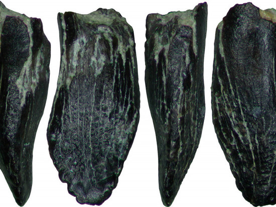
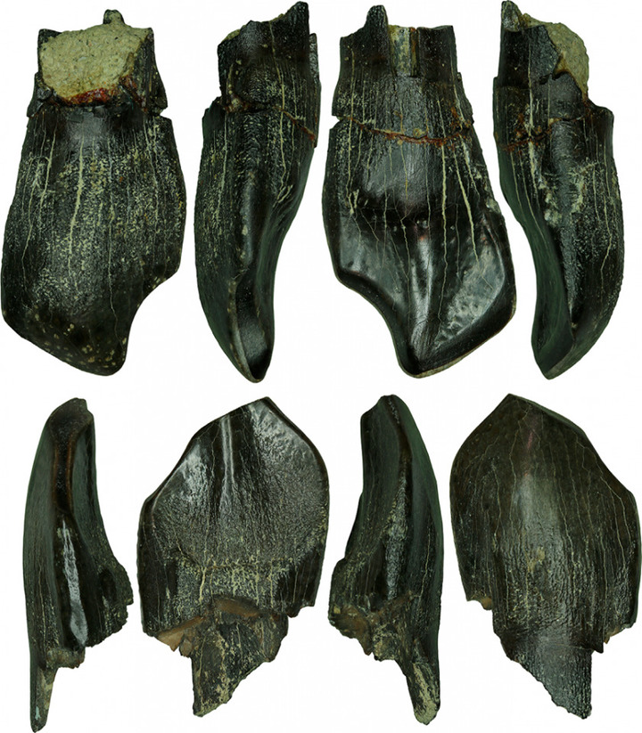

Camarasaurus is an prehistoric sauropod that lived in the circumpolar regions of North America and Yakutia. Camarasaurus is the northernmost representative of giant zauropods. Previously, it was believed that the Kamarazaurs only temporarily arrived in the Suntar district. But this assumption is refuted by the fossilised teeth of the young Camarasaurus, which indicate that they nested in Suntar.

Tooth os adults

Tooth of young camarasaurus